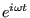
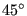

This is an example for a complex frequency calculation. A disk with an outer diameter of 10, an inner diameter of 2 and a thickness of 0.25 is mounted on a hollow shaft with outer diamter 2 and inner diameter 1 (example rotor.inp in het test examples). The disk is mounted in het middle of the shaft, the ends of which are fixed in all directions. The length of the shaft on either side of the disk is 50. The input deck for this example is shown in Figure 11.
The deck start with the definition of the nodes and elements. The set Nfix contains the nodes at the end of the shaft, which are fixed in all directions. The material is ordinary steel. Notice that the density is needed for the centrifugal loading.
Since the disk is rotation there is a preload in the form of centrifugal forces. Therefore, the first step is a nonlinear geometric static step in order to calculate the deformation and stresses due to this loading. By selecting the parameter perturbation in the subsequent frequency step this preload is taken into account in the calculation of the stiffness matrix in the frequency calculation. The resulting eigenfrequencies are stored at the top of file rotor.dat (Figure 12 for a rotational speed of 9000 rad/s). In a *FREQUENCY step an eigenvalue problem is solved, the eigenvalues of which (first column on the top of Figure 12) are the square of the eigenfrequencies of the structure (second to fourth column). If the eigenvalue is negative, an imaginary eigenfrequency results. This is the case for the two lowest eigenvalues for the rotor rotating at 9000 rad/s. For shaft speeds underneath about 6000 rad/s all eigenfrequencies are real. The lowest eigenfrequencies as a function of rotating speeds up to 18000 rad/s are shown in Figure 13 (+ and x curves).
What is the physical meaning of imaginary eigenfrequencies? The eigenmodes
resulting from a frequency calculation contain the term
. If
the eigenfrequency  is real, one obtains a sine or cosine, if
is real, one obtains a sine or cosine, if  is imaginary, one obtains an increasing or decreasing exponential
function [18]. Thus, for imaginary eigenfrequencies the response is not any more
oscillatory: it increases indefinitely, the system breaks apart. Looking at
Figure 13 one observes that the lowest eigenfrequency decreases for
increasing shaft speed up to the point where it is about zero at a shaft speed
of nearly 6000 rad/s. At that point the eigenfrequency becomes imaginary, the rotor
breaks apart. This has puzzled engineers for a long time, since real systems
were observed to reach supercritical speeds without breaking apart.
is imaginary, one obtains an increasing or decreasing exponential
function [18]. Thus, for imaginary eigenfrequencies the response is not any more
oscillatory: it increases indefinitely, the system breaks apart. Looking at
Figure 13 one observes that the lowest eigenfrequency decreases for
increasing shaft speed up to the point where it is about zero at a shaft speed
of nearly 6000 rad/s. At that point the eigenfrequency becomes imaginary, the rotor
breaks apart. This has puzzled engineers for a long time, since real systems
were observed to reach supercritical speeds without breaking apart.
The essential point here is to observe that the calculations are being performed in a rotating coordinate system (fixed to the shaft). Newton's laws are not valid in an accelerating reference system, and a rotating coordinate system is accelerating. A correction term to Newton's laws is necessary in the form of a Coriolis force. The introduction of the Coriolis force leads to a complex nonlinear eigenvalue system, which can solved with the *COMPLEX FREQUENCY procedure (cf. Section 6.9.3). One can prove that the resulting eigenfrequencies are real, the eigenmodes, however, are usually complex. This leads to rotating eigenmodes.
In order to use the *COMPLEX FREQUENCY procedure the eigenmodes without Coriolis force must have been calculated and stored in a previous *FREQUENCY step (STORAGE=YES) (cf. Figure 11). The complex frequency response is calculated as a linear combination of these eigenmodes. The number of eigenfrequencies requested in the *COMPLEX FREQUENCY step should not exceed those of the preceding *FREQUENCY step. Since the eigenmodes are complex, they are best stored in terms of amplitude and phase with PU underneath the *NODE FILE card.
The correct eigenvalues for the rotating shaft lead to the straight lines in Figure 13. Each line represents an eigenmode: the lowest decreasing line is a two-node counter clockwise (ccw) eigenmode when looking in (-z)-direction, the highest decreasing line is a three-node ccw eigenmode, the lowest and highest increasing lines constitute both a two-node clockwise (cw) eigenmode. A node is a location at which the radial motion is zero. Figure 14 shows the two-node eigenmode, Figure 15 the three-node eigenmode. Notice that if the scales on the x- and y-axis in Figure 13 were the same the lines would be under .
It might surprise that both increasing straight lines correspond to one and the same eigenmode. For instance, for a shaft speed of 5816 rad/s one and the same eigenmode occurs at an eigenfrequency of 0 and 11632 rad/s. Remember, however, that the eigenmodes are calculated in the rotating system, i.e. as observed by an observer rotating with the shaft. To obtain the frequencies for a fixed observer the frequencies have to be considered relative to a straight line through the origin and bisecting the diagram. This observer will see one and the same eigenmode at 5816 rad/s and -5816 rad/s, so cw and ccw.
Finally, the Coriolis effect is not always relevant. Generally, slender rotating structures (large blades...) will exhibit important frequency shifts due to Coriolis.